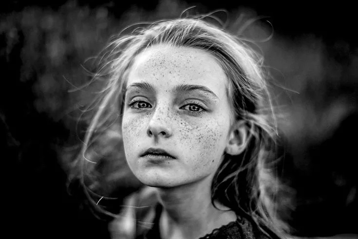
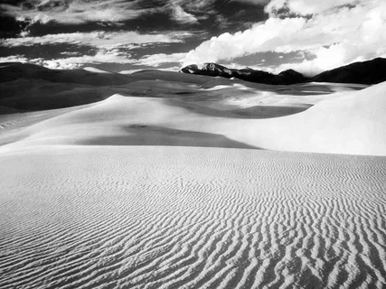

РЕКОМЕНДУЕМЫЕ РАБОТЫ

ПОРТРЕТЫ
ПЕЙЗАЖИ«В черно-белой фотографии больше цветов, чем в цветной, потому что вас ничто не ограничивает, и вы можете использовать свой опыт, знания и фантазию, чтобы добавить цвета в черно-белое изображение».— АНДЕРС ПЕТЕРСЕН